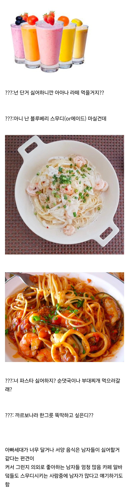

스무디&파스타

스무디&파스타
까르보나라 엄마는좋아하는데 아빠는 한두입 드시더니 느끼하다고 김치 가지러감 ㅋㅋㅋㅋ 감자구운건 드시긴하는데 위에 뿌링클 전부 털어버리고 드시더라 ㅋㅋㅋㅋ
놀러갈 때만 마시고 평소엔 안먹지...
= 게이
요거트 스무디 참 좋아하는데 살쪄 ㅠㅜ
여자가 날 안 만나주는데 나라도 에겐이 되어야지 어카것냐
정통 까르보나라는 크림 안들어가서 안느끼하고 맛있더라 그래서 난 이거 먹음
뭔 근르보나라여
이게 바로 스무디로 만들어진 배
봉골레 국물 크아 뻑예
크림파스타말고 진짜 까르보나라 먹어보고싶네
현백에 있는 이탈리 ㄱㄱ 거기 진짜임 노른자랑 후추
양이아쉽지맛은좋아
파스타는 좋아함.
당뇨라서 과일스무디는 포기했지만
토마토 쥬스 개꿀
까르보나라 존맛인데 빵으로 만든 그릇까지 싹싹김치임
아니 난 나폴리탄
뭔 근무디 근스타여.. 여자랑 있을때나 먹지 남자가 혼자 사먹는거 한번도 못봄
크림 파스타만 아니면 상관 없지
파스타는 가격대비 양이 문제지 맛이 없진 않잖아
스무디 먹는 이유가 그냥 에이드나 주스 시키면 한번 쪽 빨면 음료 다 사라져서
차라리 스무디로 다 갈아버려서 얼음이랑 먹으려고ㅋㅋ
알리오 올리오에 소주 한잔하고 요거트 스무디로
면을 안좋아해서 라면 파스타 이런건 거의 안먹지만 스무디??못참지ㅋㅋ
파스타 건면 한움큼 3~4인분씩 집어서 알덴테로 익히고
소스한통 다 붓고 마늘, 베이컨, 새우, 치킨스톡, 굴소스 넣어서
32cm 팬에 가득차게 한판 익히고 혼자 다처먹기 꺼억
정통 까르보나라 특: 막상 먹어보면 그냥 그럼
난 커피안마셔서 거의 블루베리스무디 마심 ㅋㅋㅋㅋ
크림파스타는 안좋아함 경양식 수프에 면 말아먹는듯한 싸구려 맛에 느끼하기만 느끼하고 근본도 없는 파스타라서
울 아빠도 블루베리요거트스무디 좋아함
sns로 외국아재 똥싸는 스케줄까지 알게되는 시대에 파스타는 왜 아직도 그 이미지를 못 벗는 거냐
아직 인테리어나 마케팅 접근방식때매 그런가
본토가면 국밥마냥 테토 아재들이 한그릇 싹 털어놓고 뻑예 하는 음식인데
지랄하지마 그건 니가 게이라서 그런거겠지
덬? 덬?
블루베리 스무디
나는 딸기밀크쉐이크
옛날에 카페 알바할 때 여자들은 카페 시그니쳐 시키고 남자들은 아아, 블루베리스무디, 오레오쉐이크 셋 중 하나 시키더라
가격이 문제지...